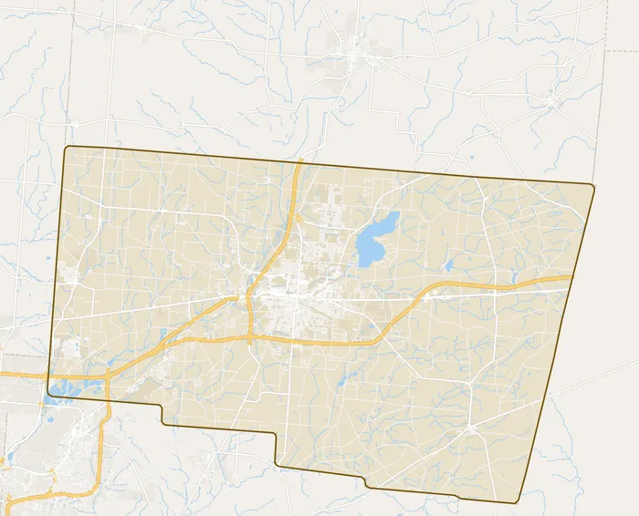

- Home
- Service Area
Springfield and Clark County
Based in Springfield. If you are not sure whether your town is covered, call or text and ask.

Towns nearby
- Springfield
- New Carlisle
- Enon
- Medway
- Donnelsville
- Park Layne
- North Hampton
- Catawba
- South Charleston
- Yellow Springs
- Urbana
The exact service area is to be confirmed with the owner.
Got a tree that has to go?
Family owned in Springfield since 2007. A photo by text is the fastest way to a price.
(937) 605-7544